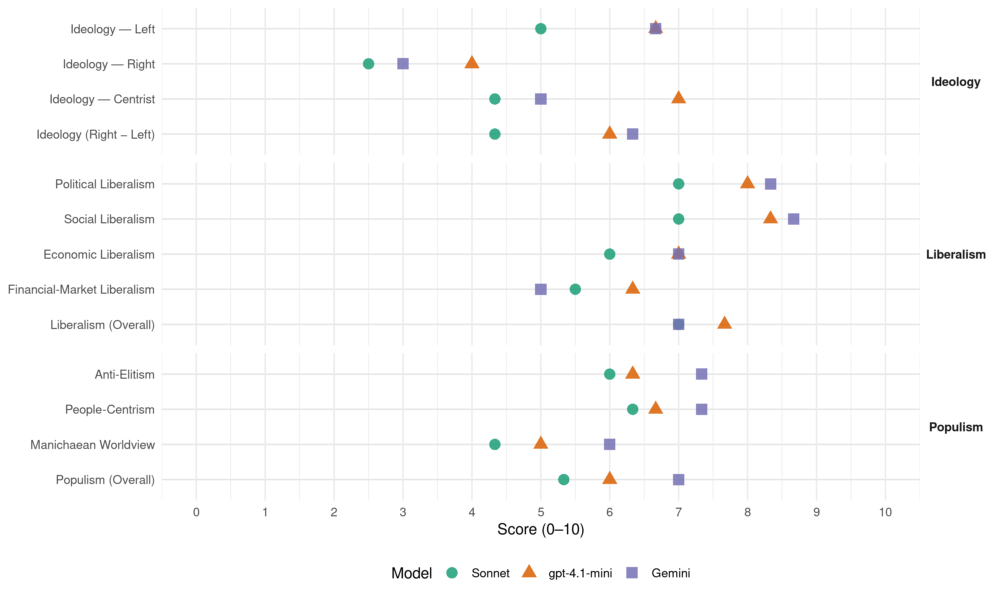

PAC (Costa Rica, 2002)
manifesto_id 153331_200202
Get full text: This site shows derived annotations and short verbatim quotes only. The full manifesto text is © Manifesto Project / WZB — obtain it via manifesto-project.wzb.eu using the manifesto_id above.
Headline scores
| Dimension | Sonnet | gpt-4.1-mini | Gemini |
|---|---|---|---|
| Populism (Overall) | 5.3 | 6.0 | 7.0 |
| Anti-Elitism | 6.0 | 6.3 | 7.3 |
| People-Centrism | 6.3 | 6.7 | 7.3 |
| Manichaean Worldview | 4.3 | 5.0 | 6.0 |
| Ideology (Right − Left) | 4.3 | 6.0 | 6.3 |
| Liberalism (Overall) | 7.0 | 7.7 | 7.0 |
| Political Liberalism | 7.0 | 8.0 | 8.3 |
| Social Liberalism | 7.0 | 8.3 | 8.7 |
| Economic Liberalism | 6.0 | 7.0 | 7.0 |
| Financial-Market Liberalism | 5.5 | 6.3 | 5.0 |
Evidence per dimension
Economic Liberalism
Gemini · score 7.0 · verified · chunk 1
“La empresa privada como la principal”
honrado de cada persona como determinante de su nivel de vida. 7. La empresa privada como la principal y más eficiente herramienta de creación de riqueza. 8
Gemini · score 3.0 · mixed · chunk 2
“La iniciativa individual y la empresa privada”
lugar que ocupa en la sociedad. La iniciativa individual y la empresa privada son las mejores heramientas para crear
Gemini · score 7.0 · verified · chunk 3
“competitividad estructural (carreteras, puertos. aeropuertos”
mejores condiciones de competitividad estructural (carreteras, puertos. aeropuertos, telecomunicaciones, seguros
gpt-4.1-mini · score 7.0 · verified · chunk 1
“La empresa privada como la principal y más eficiente herramienta de creación de riqueza”
La empresa privada como la principal y más eficiente herramienta de creación de riqueza. 8. La participación ciudadana y la descentralización como fines en la democracia y como herramientas del gobierno eficiente.
gpt-4.1-mini · score 7.0 · verified · chunk 2
“La iniciativa individual y la empresa privada son las mejores herramientas para crear riqueza.”
El artículo 15 de los Estatutos del Partido Acción Ciudadana establece los puntos de partida de nuestro pensamiento sobre el desarrollo. Define este como “el proceso de reducción de la pobreza compatible con la protección del ambiente”. Además establece que: “La acción pública debe garantizar el acceso universal a las herramientas de creación de riqueza, para que el esfuerzo de cada individuo defina el lugar que ocupa en la sociedad. La iniciativa individual y la empresa privada son las mejores heramientas para crear riqueza.
gpt-4.1-mini · score 7.0 · verified · chunk 3
“competitividad estructural (carreteras, puertos, aeropuertos, telecomunicaciones)”
Creación de mejores condiciones de competitividad estructural (carreteras, puertos. aeropuertos, telecomunicaciones, seguros, sistema financiero) para dotar a las empresas de un entorno adecuado en el que las empresas puedan sacar provecho de las oportunidades comerciales
Sonnet · score 6.0 · verified · chunk 1
“La empresa privada como la principal y más eficiente herramienta”
7. La empresa privada como la principal y más eficiente herramienta de creación de riqueza. 8. La participación ciudadana y la descentralización como fines en la democracia y como herramientas del gobierno eficiente.
Sonnet · score 5.0 · mixed · chunk 2
“La iniciativa individual y la empresa privada”
La iniciativa individual y la empresa privada son las mejores heramientas para crear riqueza. En el largo plazo podrían también conducir a la reducción de la pobreza
Sonnet · score 6.0 · mixed · chunk 3
“apertura comercial, las economias mas avanzadas”
Porque si la agenda se limita a la apertura comercial, las economias mas avanzadas tendrán todas las ventajas. Con el PAC, Costa Rica liderará un proceso para que los tratados del nuevo milenio rutinariamente contengan elementos relacionadas con activos intangibles
Financial-Market Liberalism
Gemini · score 6.0 · verified · chunk 1
“acceso paritario de las mujeres al crédito”
Banca de Desarrollo y el acceso paritario de las mujeres al crédito, garantizando el uso y destino de los fondos previstos
Gemini · score 2.0 · verified · chunk 2
“tasas de interes inferiores a las del mercado”
el crédito, impulsaremos la aplicación de tasas de interes inferiores a las del mercado para el sector agrícola, al
Gemini · score 7.0 · verified · chunk 3
“reducción de los costos de intermediación financiera”
Fomento a la modernización y reducción de los costos de intermediación financiera, alcanzando mayores
gpt-4.1-mini · score 6.0 · verified · chunk 1
“reformas financieras que se requieren para garantizar el acceso de las mujeres al crédito”
Garantizar el uso y destino de los fondos previstos para el desarrollo como resultado de la desmonopolización de las cuentas corrientes. Realizar las reformas financieras que se requieren para garantizar el acceso de la población de mujeres a los recursos de la Banca de Desarrollo.
gpt-4.1-mini · score 6.0 · verified · chunk 2
“El PAC proyecta convertir al sistema financiero en un catalizador de cambio del sistema productivo costarricense y en un agente de profundización de la movilidad social.”
En consecuencia, un alto porcentaje de los activos financieros de los grupos que operan en el país escapa al sistema de regulación y supervisión existente. En este sentido, el PAC proyecta convertir al sistema financiero en un catalizador de cambio del sistema productivo costarricense y en un agente de profundización de la movilidad social.
gpt-4.1-mini · score 7.0 · verified · chunk 3
“modernización y reducción de los costos de intermediación financiera”
Fomento a la modernización y reducción de los costos de intermediación financiera, alcanzando mayores niveles de eficiencia en la gestión.
Sonnet · score 5.0 · verified · chunk 1
“Garantizar el desarrollo una verdadera y efectiva Banca de Desarrollo”
Garantizar el desarrollo una verdadera y efectiva Banca de Desarrollo y el acceso paritario de las mujeres al crédito, garantizando el uso y destino de los fondos previstos para el desarrollo como resultado de la desmonopolización de las cuentas corrientes.
Sonnet · score 4.0 · mixed · chunk 2
“tasas de interés inferiores a las del mercado”
impulsaremos la aplicación de tasas de interes inferiores a las del mercado para el sector agrícola, al tiempo que crearemos un fondo de compensación
Sonnet · score 6.0 · verified · chunk 3
“reducción de los costos de intermediación financiera”
Fomento a la modernización y reducción de los costos de intermediación financiera, alcanzando mayores niveles de eficiencia en la gestión.
Political Liberalism
Gemini · score 9.0 · verified · chunk 1
“la verdad es la materia prima de la democracia”
esconder un pensamiento por más impopular que sea, porque la verdad es la materia prima de la democracia, es la materia prima de un gobierno efectivo capaz
Gemini · score 8.0 · verified · chunk 2
“liderazgos y en las instituciones democráticas”
permitirá a la juventud creer nuevamente en los liderazgos y en las instituciones democráticas. La jventus será parte
Gemini · score 8.0 · verified · chunk 3
“democracia los derechos humanos, la ética”
relacionadas a la democracia los derechos humanos, la ética y la transparencia
gpt-4.1-mini · score 8.0 · verified · chunk 1
“respeten los derechos de todas y todos los costarricenses”
Trabajaremos para que se respeten los derechos de todas y todos los costarricenses, para que su esfuerzo honrado rinda frutos, para que no existan atajos, ni rutas cortas, ni padrinazgos que pongan la política y el gobierno al servicio de unos pocos privilegiados.
gpt-4.1-mini · score 8.0 · verified · chunk 2
“El hecho de contar con un gobierno ético, trasnparente y responsable le permitirá a la juventud creer nuevamente en los liderazgos y en las instituciones democráticas.”
La propuesta del PAC de implantar una nueva ética en la política nos permitirá renovar la fe y la esperanza en la juventud. El hecho de contar con un gobierno ético, trasnparente y responsable le permitirá a la juventud creer nuevamente en los liderazgos y en las instituciones democráticas.
gpt-4.1-mini · score 8.0 · verified · chunk 3
“promoción y respeto de los derechos humanos, el apego a la democracia”
Históricamente, nuestra Política Exterior se orientó a la atención de un conjunto de temas tradicionales, ampliamente reconocidos por la comunidad internacional, tales como la promoción y respeto de los derechos humanos, el apego a la democracia, el desarme y la solución pacifica de las controversias.
Sonnet · score 7.0 · verified · chunk 1
“Abriremos las puertas de la democracia de par en par”
Abriremos las puertas de la democracia de par en par para que la democracia otra vez sea grande y sirva de herramienta para la solución de los problemas que desde hace años se han venido posponiendo con ineficiencias, excusas y retórica vacía.
Sonnet · score 7.0 · verified · chunk 2
“creer nuevamente en las instituciones democráticas”
le permitirá a la juventud creer nuevamente en los liderazgos y en las instituciones democráticas
Sonnet · score 7.0 · verified · chunk 3
“la democracia los derechos humanos, la ética”
El pais será protagonista en la introducción y condiciones relacionadas a la democracia los derechos humanos, la ética y la transparencia en la función pública, el ambiente, la libertad de prensa, la descentralización, la igualdad de genero
Liberalism (Overall)
Gemini · score 8.0 · verified · chunk 1
“la verdad es la materia prima de la democracia”
esconder un pensamiento por más impopular que sea, porque la verdad es la materia prima de la democracia, es la materia prima de un gobierno efectivo capaz
Gemini · score 5.0 · verified · chunk 2
“La iniciativa individual y la empresa privada”
lugar que ocupa en la sociedad. La iniciativa individual y la empresa privada son las mejores heramientas para crear
Gemini · score 8.0 · verified · chunk 3
“democracia los derechos humanos, la ética”
relacionadas a la democracia los derechos humanos, la ética y la transparencia
gpt-4.1-mini · score 8.0 · verified · chunk 1
“respeten los derechos de todas y todos los costarricenses”
Trabajaremos para que se respeten los derechos de todas y todos los costarricenses, para que su esfuerzo honrado rinda frutos, para que no existan atajos, ni rutas cortas, ni padrinazgos que pongan la política y el gobierno al servicio de unos pocos privilegiados.
gpt-4.1-mini · score 7.0 · verified · chunk 2
“El hecho de contar con un gobierno ético, trasnparente y responsable le permitirá a la juventud creer nuevamente en los liderazgos y en las instituciones democráticas.”
La propuesta del PAC de implantar una nueva ética en la política nos permitirá renovar la fe y la esperanza en la juventud. El hecho de contar con un gobierno ético, trasnparente y responsable le permitirá a la juventud creer nuevamente en los liderazgos y en las instituciones democráticas.
gpt-4.1-mini · score 8.0 · verified · chunk 3
“promoción y respeto de los derechos humanos, el apego a la democracia”
Históricamente, nuestra Política Exterior se orientó a la atención de un conjunto de temas tradicionales, ampliamente reconocidos por la comunidad internacional, tales como la promoción y respeto de los derechos humanos, el apego a la democracia, el desarme y la solución pacifica de las controversias.
Sonnet · score 7.0 · verified · chunk 1
“la verdad es la materia prima de la democracia”
Jamás esconderemos un pensamiento por más impopular que sea, porque la verdad es la materia prima de la democracia, es la materia prima de un gobierno efectivo capaz de tomar decisiones, porque la verdad en la política es la materia prima del respeto a los ciudadanos.
Sonnet · score 5.0 · mixed · chunk 2
“gobierno ético, trasnparente y responsable”
El hecho de contar con un gobierno ético, trasnparente y responsable le permitirá a la juventud creer nuevamente en los liderazgos
Sonnet · score 7.0 · verified · chunk 3
“libertad de prensa, la descentralización, la igualdad”
El pais será protagonista en la introducción y condiciones relacionadas a la democracia los derechos humanos, la ética y la transparencia en la función pública, el ambiente, la libertad de prensa, la descentralización, la igualdad de genero
Anti-Elitism
Gemini · score 8.0 · verified · chunk 1
“terminaremos con las argollas, los monopolios de poder”
conozca lo que ocurre en esas mesas de poder. Así terminaremos con las argollas, los monopolios de poder y los compadrazgos; así terminaremos con las
Gemini · score 8.0 · verified · chunk 2
“la politiquería y el abuso en el manejode”
crece año con año porque la politiquería y el abuso en el manejode esos fondos malogran los esfuerzos.
Gemini · score 6.0 · verified · chunk 3
“a espaldas de la gente”
decisiones importantes a espaldas de la gente. como se hizo con los PAE
gpt-4.1-mini · score 7.0 · verified · chunk 1
“terminaremos con las argollas, los monopolios de poder y los compadrazgos”
abriremos las ventanas y las puertas para que sin dificultades. ni obstáculos ni excusas, la gente conozca lo que ocurre en esas mesas de poder. Así terminaremos con las argollas, los monopolios de poder y los compadrazgos; así terminaremos con las corruptelas-rlos grandes desfalcos.
gpt-4.1-mini · score 7.0 · verified · chunk 2
“Fin del clientelismo Es lamentable e inadmisibles que se cimenten carreras políticas a expensas del sufrimiento y las necesidades de los pobres.”
Fin del clientelismo Es lamentable e inadmisibles que se cimenten carreras políticas a expensas del sufrimiento y las necesidades de los pobres. La repartición de bonos y ayudas sociales no puede ser negocio para nadie.
gpt-4.1-mini · score 5.0 · verified · chunk 3
“no es aceptable que se negocie a espaldas de la población”
Lo que no es conveniente es creer que la competitividad internacional se logra con la firma de tratados o que estos son fines en si mismos. Tampoco es aceptable que se negocie a espaldas de la población Los tratados deben tener como fin sacar el máximo provecho de la estrategia de competitividad escogida.
Sonnet · score 7.0 · verified · chunk 1
“terminaremos con las argollas, los monopolios de poder”
Pondremos una luz para que ilumine las mesas de poder y abriremos las ventanas y las puertas para que sin dificultades. ni obstáculos ni excusas, la gente conozca lo que ocurre en esas mesas de poder. Así terminaremos con las argollas, los monopolios de poder y los compadrazgos; así terminaremos con las corruptelas
Sonnet · score 6.0 · verified · chunk 2
“la politiquería y el abuso en el manejo”
la pobreza crece año con año porque la politiquería y el abuso en el manejode esos fondos malogran los esfuerzos
Sonnet · score 5.0 · verified · chunk 3
“se negocie a espaldas de la población”
Lo que no es conveniente es creer que la competitividad internacional se logra con la firma de tratados o que estos son fines en si mismos. Tampoco es aceptable que se negocie a espaldas de la población Los tratados deben tener como fin sacar el máximo provecho
Ideology — Centrist
Gemini · score 5.0 · verified · chunk 1
“un nuevo partido, miles de costarricenses”
posibilidad de un nuevo partido, miles de costarricenses han acudido a crearlo y a darle
Gemini · score 5.0 · verified · chunk 3
“pacte con ella antes que con nadie”
respete la gente y se pacte con ella antes que con nadie. Para lograrlo utilizaremos
gpt-4.1-mini · score 8.0 · verified · chunk 1
“El partido de la gente Desde hace tiempo miles y miles de costarricenses tenían en sus corazones la visión”
Este Partido es de la gente y la gente sabe que para culminar exitosamente las luchas aquí enumeradas y que se resumen en este documento se requiere de más disposición a trabajar duro y menos consumismo Necesitamos que todo empresario pague sus impuestos,
gpt-4.1-mini · score 6.0 · verified · chunk 2
“La propuesta del PAC de implantar una nueva ética en la política nos permitirá renovar la fe y la esperanza en la juventud.”
La propuesta del PAC de implantar una nueva ética en la política nos permitirá renovar la fe y la esperanza en la juventud. El hecho de contar con un gobierno ético, transparente y responsable le permitirá a la juventud creer nuevamente en los liderazgos y en las instituciones democráticas.
gpt-4.1-mini · score 7.0 · verified · chunk 3
“participación del sector productivo — empresarios y trabajadores”
nuestro gobierno solicitará con fervor la participación del sector productivo — empresarios y trabajadores -, de las agrupaciones ecologistas y a otras expresiones de la sociedad civil, como la juventud. En el caso específico de la juventud, nuestro gobierno pondrá a su disposición recursos económicos para que contraten asesores y el apoyo log´stico que les permita ser protagonistas en las discusiones y en la negociación del ALCA.
Sonnet · score 5.0 · verified · chunk 1
“convocatoria a las y los costarricenses”
Por eso no nos limitamos a presentar un programa de gobierno, sino que hacemos una convocatoria a las y los costarricenses para que reasumamos colectivamente el reto de construir el destino nacional
Sonnet · score 4.0 · verified · chunk 2
“nueva ética en la política”
la propuesta del PAC de implantar una nueva ética en la política nos permitirá renovar la fe y la esperanza en la juventud
Sonnet · score 4.0 · verified · chunk 3
“diálogo, la solidaridad, la negociación pacífica”
La propuesta solo es posible en una cultura identificada con el diálogo, la solidaridad, la negociación pacífica y enemiga de la confrontación.
Ideology — Left
Gemini · score 6.0 · verified · chunk 1
“solidaridad y el bien común”
diálogo y la participación ciudadana, y quienes crean en la solidaridad y el bien común, quedan convocados a compartir y abonar esta causa
Gemini · score 8.0 · verified · chunk 2
“fortaleceremos el agro con susvsidios y proteccionismo”
Por lo anterior, fortaleceremos el agro con susvsidios y proteccionismo alacelario y no alancelario, sin
Gemini · score 6.0 · verified · chunk 3
“no cree en la privatización de la salud”
señalar que el PAC no cree en la privatización de la salud como forma de
gpt-4.1-mini · score 7.0 · verified · chunk 1
“la solidaridad y el acceso universal a las oportunidades de creación de riqueza”
La solidaridad y el acceso universal a las oportunidades de creación de riqueza, como fines del desarrollo y como herramientas principales de crecimiento económico y movilidad social.
gpt-4.1-mini · score 7.0 · verified · chunk 2
“La acción pública debe garantizar el acceso universal a las herramientas de creación de riqueza, para que el esfuerzo de cada individuo defina el lugar que ocupa en la sociedad.”
El artículo 15 de los Estatutos del Partido Acción Ciudadana establece los puntos de partida de nuestro pensamiento sobre el desarrollo. Define este como “el proceso de reducción de la pobreza compatible con la protección del ambiente”. Además establece que: “La acción pública debe garantizar el acceso universal a las herramientas de creación de riqueza, para que el esfuerzo de cada individuo defina el lugar que ocupa en la sociedad.
gpt-4.1-mini · score 6.0 · verified · chunk 3
“diálogo, la solidaridad, la negociación pacífica y enemiga de la confrontación”
La propuesta solo es posible en una cultura identificada con el diálogo, la solidaridad, la negociación pacífica y enemiga de la confrontación. El PAC incluido en su programa de gobierno sus contenidos y esperamos que sirva de referente para la construcción de las alianzas que demanda el desarrollo y para el clima de armonía que debe reinar en el pais.
Sonnet · score 5.0 · verified · chunk 1
“solidaridad con los que menos tienen”
A la par de la solidaridad con los que menos tienen y los programas para combatir la pobreza, es necesario que la gente más pobre comprenda que es su esfuerzo y su compromiso con el trabajo duro, lo que finalmente le permitirá salir de su difícil situación.
Sonnet · score 5.0 · verified · chunk 2
“quien más tiene, más paga”
financiar con la intermedicación de recursos de la sociedad, por medio de impuestos, bajo el principio de que quien más tiene, más paga
Sonnet · score 5.0 · verified · chunk 3
“equidad social”
una coalición de 150 multinacionales unidas por su compromiso con el desarrollo sostenible en sus tres aristas: crecimiento económico, protección ambiental y equidad social.
Ideology (Right − Left)
Gemini · score 6.0 · verified · chunk 1
“el PAC pertenece a la gente”
debe ser el desarrollo nacional. Por ello el PAC pertenece a la gente y debe siempre pertenecer a la gente de cada
Gemini · score 8.0 · verified · chunk 2
“fortaleceremos el agro con susvsidios y proteccionismo”
Por lo anterior, fortaleceremos el agro con susvsidios y proteccionismo alacelario y no alancelario, sin
Gemini · score 5.0 · verified · chunk 3
“no cree en la privatización de la salud”
señalar que el PAC no cree en la privatización de la salud como forma de
gpt-4.1-mini · score 7.0 · verified · chunk 1
“la solidaridad y el acceso universal a las oportunidades de creación de riqueza”
La solidaridad y el acceso universal a las oportunidades de creación de riqueza, como fines del desarrollo y como herramientas principales de crecimiento económico y movilidad social.
gpt-4.1-mini · score 6.0 · verified · chunk 2
“La acción pública debe garantizar el acceso universal a las herramientas de creación de riqueza, para que el esfuerzo de cada individuo defina el lugar que ocupa en la sociedad.”
El artículo 15 de los Estatutos del Partido Acción Ciudadana establece los puntos de partida de nuestro pensamiento sobre el desarrollo. Define este como “el proceso de reducción de la pobreza compatible con la protección del ambiente”. Además establece que: “La acción pública debe garantizar el acceso universal a las herramientas de creación de riqueza, para que el esfuerzo de cada individuo defina el lugar que ocupa en la sociedad.
gpt-4.1-mini · score 5.0 · verified · chunk 3
“no es aceptable que se negocie a espaldas de la población”
Lo que no es conveniente es creer que la competitividad internacional se logra con la firma de tratados o que estos son fines en si mismos. Tampoco es aceptable que se negocie a espaldas de la población Los tratados deben tener como fin sacar el máximo provecho de la estrategia de competitividad escogida.
Sonnet · score 5.0 · verified · chunk 1
“Este Partido es de la gente”
Este Partido es de la gente y la gente sabe que para culminar exitosamente las luchas aquí enumeradas y que se resumen en este documento se requiere de más disposición a trabajar duro y menos consumismo
Sonnet · score 4.0 · verified · chunk 2
“La iniciativa individual y la empresa privada”
La iniciativa individual y la empresa privada son las mejores heramientas para crear riqueza
Sonnet · score 4.0 · verified · chunk 3
“nuevo paradigma, que tome en cuenta los valores”
el PAC no nos cansaremos de insistir en que Costa Rica debe surgir de la presente crisis con un nuevo paradigma, que tome en cuenta los valores que servirán de guía a la humanidad en este nuevo siglo.
Ideology — Right
Gemini · score 3.0 · verified · chunk 3
“frenar esta competencia desleal de los trabajadores”
mano dura para frenar esta competencia desleal de los trabajadores nicaragüenses frente
gpt-4.1-mini · score 5.0 · verified · chunk 2
“Fortaleceremos el agro con subsidios y proteccionismo alacelario y no alancelario, sin que ello implique la violación de tratados de libre comercio o disposiciones de las OMC.”
Proteccionismo y más trabajo Por lo anterior, fortaleceremos el agro con susvsidios y proteccionismo alacelario y no alancelario, sin que ello implique la violación de tratados de libre comercio o disposiciones de las OMC. Los compromisos de desgrabación responderán al proceso real de producción del pais, acompañados del cambio tecnológico necesario para mejorar la competitividad, antes de la aperturas de las fronteras.
gpt-4.1-mini · score 3.0 · verified · chunk 3
“problema de los inmigrantes, particularmente nicaragüenses”
Durante la última decada Costa Rica ha visto agudizarse el problema de los inmigrantes, particularmente nicaragüenses, los cuales, según estimaciones oficiales del Censo Nacional 2001, rondan los 300,000 Con ellos, obviamente, vienen aparejados muchos otros inconvenientes relacionados con el empleo, la vivienda, la educación, la salud y la seguridad, entre otros
Sonnet · score 1.0 · mixed · chunk 1
“respetemos los derechos de las minorías y la diversidad”
Activamente respetemos los derechos de las minorías y la diversidad de culturas, gustos, tradiciones, religiones, orientaciones sexuales, orígenes étnicos o nacionalidades
Sonnet · score 3.0 · verified · chunk 2
“proteccionismo arancelario y no arancelario”
fortaleceremos el agro con subsidios y proteccionismo arancelario y no arancelario, sin que ello implique la violación de tratados
Sonnet · score 2.0 · verified · chunk 3
“frenar esta competencia desleal de los trabajadores nicaragüenses”
será la de exigirle al Ministerio de Trabajo mano dura para frenar esta competencia desleal de los trabajadores nicaragüenses frente a los nacionales.
Manichaean Worldview
Gemini · score 7.0 · verified · chunk 1
“incineramos los vicios y obstáculos”
sueños y las esperanzas, si con la llama de la tea no solo incineramos los vicios y obstáculos que han detenido nuestra marcha hacia el desarrollo, sino
Gemini · score 7.0 · verified · chunk 2
“un vil atropello e irrespeto a la disnidad”
actos de corrupción, constituyen un vil atropello e irrespeto a la disnidad de los más necesitados.
Gemini · score 4.0 · verified · chunk 3
“impunidad que ha acompañado los grandes”
demostración que ha tenido la impunidad que ha acompañado los grandes y pequeños escándalos
gpt-4.1-mini · score 6.0 · verified · chunk 1
“la mentira en la política, definida aquella como decir cosas diferentes a las que se piensan”
la corrupción está relacionado con la mentira en la política, definida aquella como decir cosas diferentes a las que se piensan como hacer planteamientos en campaña que luego no se cumplen en el gobierno como fraguar pactos entre las cúpulas de los partidos a espaldas de la gente.
gpt-4.1-mini · score 5.0 · verified · chunk 2
“Los desfalcos contra fondos de asistencia social y programas de vivienda, así como su repartición con criterio político partidista o clientelar, además de vergonzantes actos de corrupción, constituyen un vil atropello e irrespeto a la dignidad de los más necesitados.”
Los desfalcos contra fondos de asistencia social y programas de vivienda, así como su repartición con criterio político partidista o clientelar, además de vergonzantes actos de corrupción, constituyen un vil atropello e irrespeto a la dignidad de los más necesitados. El Estado costarricense invierte presupuestos millonarios en programas de combate a la pobreza, pero paradójicamente la pobreza crece año con año porque la politiquería y el abuso en el manejo de esos fondos malogran los esfuerzos.
gpt-4.1-mini · score 4.0 · verified · chunk 3
“el narcotrafico, el lavado de dinero, las redes de prostitución infantil”
En tercer lugar, aunque no menos importante que los dos aspectos anteriores. tenemos la transnacionalización del delito por medio de una serie de actividades que como el narcotrafico, el lavado de dinero, las redes de prostitución infantil y las bandas de robacarros, entre otras, han extendido sus influencias hasta nuestro país.
Sonnet · score 5.0 · verified · chunk 1
“pactos al margen de la población”
Con nosotros se acaban los pactos al margen de la población como los que caracterizaron los Programas de Ajuste Estructural, los tratados de libre comercio y los combos. A la gente se le debe respetar su criterio y buen juicio.
Sonnet · score 4.0 · verified · chunk 2
“dos grandes mentiras: una internacional y otra nacional”
El agro costarricense ha sido víctima y ha sufrido las consecuencias de dos grandes mentiras: una internacional y otra nacional
Sonnet · score 4.0 · verified · chunk 3
“absurdo antidemocrático que solo conduce”
Actuar a la inversa, es decir utilizar el contenido de los tratados para diseñar por la fuerza y al margen de la población la política de desarrollo, es un absurdo antidemocrático que solo conduce a la ingobernabilidad y al conflicto
People-Centrism
Gemini · score 8.0 · verified · chunk 1
“el PAC pertenece a la gente”
debe ser el desarrollo nacional. Por ello el PAC pertenece a la gente y debe siempre pertenecer a la gente de cada
Gemini · score 7.0 · verified · chunk 2
“alimentarán al pueblo costarricense”
alimentario y serán los agricultores costarricenses los que alimentarán al pueblo costarricense. Mientras un agricultor
Gemini · score 7.0 · verified · chunk 3
“pacte con ella antes que con nadie”
respete la gente y se pacte con ella antes que con nadie. Para lograrlo utilizaremos
gpt-4.1-mini · score 8.0 · verified · chunk 1
“El partido de la gente Desde hace tiempo miles y miles de costarricenses tenían en sus corazones la visión”
Este Partido es de la gente y la gente sabe que para culminar exitosamente las luchas aquí enumeradas y que se resumen en este documento se requiere de más disposición a trabajar duro y menos consumismo Necesitamos que todo empresario pague sus impuestos,
gpt-4.1-mini · score 6.0 · verified · chunk 2
“La juventud será parte de la historia y actora de primer orden en las alianzas que deben forjar el proceso de desarrollo si tiene confianza en la política y en el gobierno.”
La propuesta del PAC de implantar una nueva ética en la política nos permitirá renovar la fe y la esperanza en la juventud. La juventud será parte de la historia y actora de primer orden en las alianzas que deben forjar el proceso de desarrollo si tiene confianza en la política y en el gobierno.
gpt-4.1-mini · score 6.0 · verified · chunk 3
“Es tiempo de que se respete la gente y se pacte con ella antes que con nadie”
Ya el país experimentó las divisiones, los parches imperfectos y las pifias que resultan cuando se pacta y se toman decisiones importantes a espaldas de la gente. como se hizo con los PAE, algunos TLC o con el COMBO del ICE. Esta práctica no debe permitirse en las negociaciones del ALCA. Es tiempo de que se respete la gente y se pacte con ella antes que con nadie.
Sonnet · score 8.0 · verified · chunk 1
“el PAC pertenece a la gente y debe siempre pertenecer a la gente”
Por ello el PAC pertenece a la gente y debe siempre pertenecer a la gente de cada rincón de Costa Rica. Este partido se hizo en tan poco tiempo y con tan poco dinero no por los méritos de unos pocos sino por el coraje, la independencia, el orgullo y la dignidad de los costarricenses.
Sonnet · score 5.0 · verified · chunk 2
“convocatoria a las y los costarricenses”
forma parte integral de nuestra convocatoria a las y los costarricenses y de ella se derivarán nuestras acciones
Sonnet · score 6.0 · verified · chunk 3
“Es tiempo de que se respete la gente”
Ya el país experimentó las divisiones, los parches imperfectos y las pifias que resultan cuando se pacta y se toman decisiones importantes a espaldas de la gente. Esta práctica no debe permitirse en las negociaciones del ALCA. Es tiempo de que se respete la gente y se pacte con ella antes que con nadie.
Populism (Overall)
Gemini · score 8.0 · verified · chunk 1
“el PAC pertenece a la gente”
debe ser el desarrollo nacional. Por ello el PAC pertenece a la gente y debe siempre pertenecer a la gente de cada
Gemini · score 7.0 · verified · chunk 2
“la politiquería y el abuso en el manejode”
crece año con año porque la politiquería y el abuso en el manejode esos fondos malogran los esfuerzos.
Gemini · score 6.0 · verified · chunk 3
“a espaldas de la gente”
decisiones importantes a espaldas de la gente. como se hizo con los PAE
gpt-4.1-mini · score 7.0 · verified · chunk 1
“terminaremos con las argollas, los monopolios de poder y los compadrazgos”
abriremos las ventanas y las puertas para que sin dificultades. ni obstáculos ni excusas, la gente conozca lo que ocurre en esas mesas de poder. Así terminaremos con las argollas, los monopolios de poder y los compadrazgos; así terminaremos con las corruptelas-rlos grandes desfalcos.
gpt-4.1-mini · score 6.0 · verified · chunk 2
“Fin del clientelismo Es lamentable e inadmisibles que se cimenten carreras políticas a expensas del sufrimiento y las necesidades de los pobres.”
Fin del clientelismo Es lamentable e inadmisibles que se cimenten carreras políticas a expensas del sufrimiento y las necesidades de los pobres. La repartición de bonos y ayudas sociales no puede ser negocio para nadie.
gpt-4.1-mini · score 5.0 · verified · chunk 3
“no es aceptable que se negocie a espaldas de la población”
Lo que no es conveniente es creer que la competitividad internacional se logra con la firma de tratados o que estos son fines en si mismos. Tampoco es aceptable que se negocie a espaldas de la población Los tratados deben tener como fin sacar el máximo provecho de la estrategia de competitividad escogida.
Sonnet · score 6.0 · verified · chunk 1
“la gente conozca lo que ocurre en esas mesas de poder”
Pondremos una luz para que ilumine las mesas de poder y abriremos las ventanas y las puertas para que sin dificultades. ni obstáculos ni excusas, la gente conozca lo que ocurre en esas mesas de poder.
Sonnet · score 5.0 · verified · chunk 2
“Fin del clientelismo”
Es lamentable e inadmisibles que se cimenten carreras políticas a expensas del sifrimiento y las necesidades de los pobres. Fin del clientelismo
Sonnet · score 5.0 · verified · chunk 3
“se pacte con ella antes que con nadie”
Esta práctica no debe permitirse en las negociaciones del ALCA. Es tiempo de que se respete la gente y se pacte con ella antes que con nadie. Para lograrlo utilizaremos un lenguaje directo, preciso y transparente
Social Liberalism